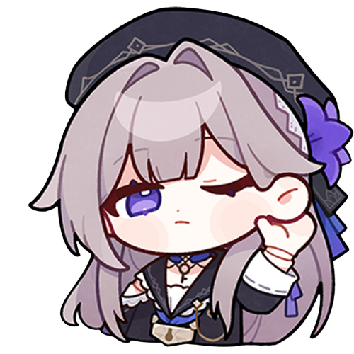

Honkai : Star Rail Walkthrough
Selamat datang di Website Walkthrough untuk Game Honkai Star Rail
Website ini bertujuan untuk membantu para Player untuk Mengenal lebih dalam Mengenai Game ini
Download Game At
Developed By
Selamat datang di Website Walkthrough untuk Game Honkai Star Rail
Website ini bertujuan untuk membantu para Player untuk Mengenal lebih dalam Mengenai Game ini
Download Game At
Developed By
Apa Itu Honkai: Star Rail?
Honkai : Star Rail Adalah Game RPG yang dikembangkan Oleh Mihoyo.Permainan ini diterbitkan oleh miHoYo di Tiongkok dan HoYoverse di seluruh dunia. Permainan ini dirilis pada 26 April 2023 untuk Windows dan perangkat seluler.Honkai: Star Rail merupakan permainan keempat dalam seri Honkai yang menggunakan karakter dari Honkai Impact 3rd dan elemen alur permainan dari Genshin Impact.
Sinopsis
Cerita game dimulai ketika March 7th dan
Dan Heng, dua anggota kru Astral Express, sedang mengirimkan artefak langka ke Herta, pemilik Stasiun Luar Angkasa Herta.Namun, mereka tiba-tiba diserang oleh
Voidrangers dari Antimatter Legion. Beruntungnya, mereka berhasil melawan para musuh dan bertemu dengan Asta, seorang peneliti dan Arlan, kepala keamanan.Namun, mereka
tidak tahu bahwa dua pemburu Stellaron, Kafka dan Silver Wolf, berhasil masuk ke dalam stasiun dan mencuri sebuah Stellaron untuk membuat
Trailblazer, karakter buatan manusia.
Setelah
diaktifkan, Kafka memberitahu Trailblazer tentang misi mereka untuk menemukan teman dan melanjutkan perjalanan. Kafka dan
Silver Wolf kemudian pergi untuk menghadap Astral Express. Setelah ditemukan oleh March 7th dan Dan Heng,
Trailblazer membantu mereka melawan Trampler dan Voidrangers. Mereka berhasil melarikan diri dan bertemu dengan Himeko, seorang anggota Astral Express.
Namun, stasiun mereka diserang oleh monster legendaris bernama Doomsday Beast. Trailblazer yang melihat visi masa depannya berhasil mengalahkan monster tersebut, namun ia menjadi tidak terkendali.
Welt, tokoh utama dari Honkai Impact 3rd, datang dan berhasil menstabilkan keadaannya. Setelah sadar kembali, Trailblazer berkenalan dengan
Herta dan diberikan kebebasan untuk menjaga Stellaron. Himeko juga menawarkan Trailblazer bergabung dengan Astral Express, sebuah
organisasi yang bergerak dalam mencari Stellaron dan menjawab misteri tentang keberadaan mereka. Trailblazer pun menerima tawaran tersebut dan memulai petualangan baru.